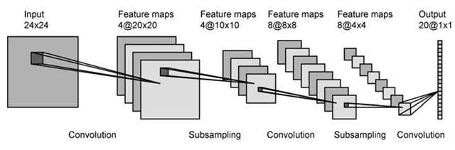

Convolutional neural network - How to get the feature maps?
I read a few books and articles about Convolutional neural network, it seems I
understand the concept but I don't know how to put it up like in image below:

(source: what-when-how.com)
from 28x28 normalized pixel INPUT we get 4 feature maps of size 24x24. but how to get them ? resizing the INPUT image ? or performing image transformations? but what kind of transformations? or cutting the input image into 4 pieces of size 24x24 by 4 corner? I don't understand the process, to me it seem they cut up or resize the image to smaller images at each step. please help thanks.
Answer
This is matlab help file for CONV2 function, which use in CNN Matlab (to get convolutional layers). Read it carefully and you will see your answer.
%CONV2 Two dimensional convolution. % C = CONV2(A, B) performs the 2-D convolution of matrices A and B. % If [ma,na] = size(A), [mb,nb] = size(B), and [mc,nc] = size(C), then % mc = max([ma+mb-1,ma,mb]) and nc = max([na+nb-1,na,nb]). % % C = CONV2(H1, H2, A) convolves A first with the vector H1 along the % rows and then with the vector H2 along the columns. If n1 = length(H1) % and n2 = length(H2), then mc = max([ma+n1-1,ma,n1]) and % nc = max([na+n2-1,na,n2]). % % C = CONV2(..., SHAPE) returns a subsection of the 2-D % convolution with size specified by SHAPE: % 'full' - (default) returns the full 2-D convolution, % 'same' - returns the central part of the convolution % that is the same size as A. % 'valid' - returns only those parts of the convolution % that are computed without the zero-padded edges. % **size(C) = max([ma-max(0,mb-1),na-max(0,nb-1)],0).**